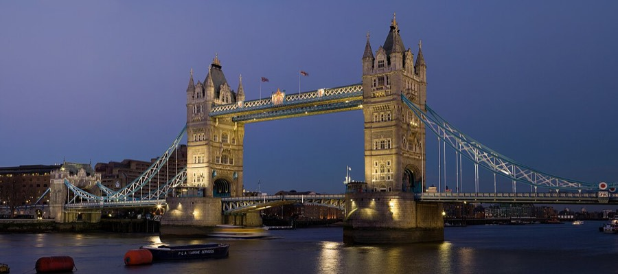
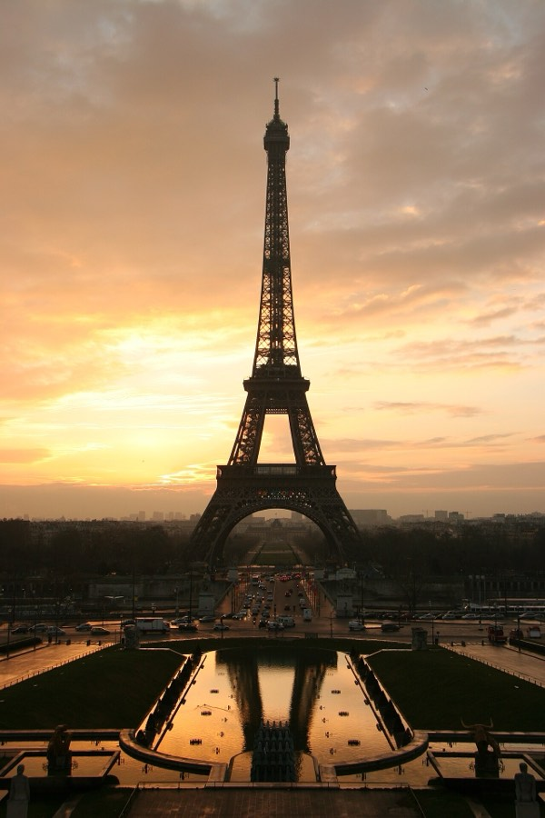

As passagens já estão compradas: chegada e saída por Lisboa, pela TAP. Londres e Paris estão fechadas. O que falta decidir é se o trecho português passa pelo Porto e quantas noites fica em cada cidade.


Em Londres, as liquidações de inverno costumam acabar em meados de janeiro, então deve sobrar só o fim do estoque. Em Paris, os soldes vão de 06.01 a 02.02. Em Portugal, cada loja define seus saldos, que em geral vão do fim de dezembro a fevereiro. Barbour é a prioridade de compras da viagem.
Pouso em Lisboa às 10:55, imigração Schengen e voo para Londres. À noite, Covent Garden, Neal's Yard e Soho: House of MinaLima (até 18h45), The Sun Pub ou The French House e jantar no The Barbary, Kiln ou Dumplings' Legend.
O voo para Londres fica em bilhete separado da TAP. Se o TP 110 atrasar, a conexão não é protegida: vale um voo a partir das 15h, de preferência com tarifa remarcável.
Barbour (71–77 Regent St) logo na abertura. Depois January Sales em Regent St, Jermyn St e Savile Row: Charles Tyrwhitt, Suitsupply (Vigo St), Uniqlo, Liberty e a nova Harry Potter Shop da Oxford St. Almoço no Mercato Mayfair, Wallace Collection e British Museum à tarde. Noite no Mikkeller Brewpub.
O British Museum fecha às 17h na quarta (só estende às sextas, até 20h30). Entrar até as 15h.
St. James's Park e The Mall, Churchill War Rooms e Abadia de Westminster (ingressos com horário). À tarde, Peggy Porschen, Harrods e Japan House, em Kensington.
St Paul's (cúpula e cripta), One New Change, Leadenhall Market e Suitsupply Lime St. Brick Lane, Shoreditch e Mikkeller Bar. A partir das 16h, The Shard e a Bermondsey Beer Mile (Mash Paddle, Cloudwater, The Kernel). Fecha no Graffiti Tunnel e no BrewDog Waterloo.
Camden Town Brewery e almoço no Ma Petite Jamaica, King's Cross (Plataforma 9¾) e Coal Drops Yard. Eurostar no fim da tarde. Noite no Canal Saint-Martin, no BBP Canal.
Alternativa: visita guiada ao Parlamento (pendência de 2022), que costuma ocorrer aos sábados. Camden Town Brewery já foi visitada em 2022.
Marché Bastille (só quinta e domingo), Place des Vosges, Octobre Éditions e Uniqlo do Marais (abertas no domingo). Orangerie e Orsay à tarde. Café de Flore, TASCHEN e La Robe & La Mousse à noite.
Fondation Louis Vuitton e Arco do Triunfo. Notre-Dame, Conciergerie, Panthéon, Jardim de Luxemburgo e Suitsupply Saint-Germain.
Confirmar se a Fondation estará aberta: a mostra de inverno termina em 18.01.
Madeleine, Ópera Garnier e Haussmann (Galeries Lafayette, Uniqlo Opéra). Suitsupply Rue de la Paix, Octobre Éditions e Galerie Vivienne. Sacré-Cœur, jantar no Pink Mamma e Mikkeller Paris.
Musée Rodin, Invalides, Ponte Alexandre III e Grand Palais. Almoço no Marché des Enfants Rouges, BonneGueule (Rue Commines) e Les Cuves de Fauve à noite.
Dá dois dias inteiros no Porto, mas Lisboa fica com dois dias úteis e sem Sintra.
Aliados, Estação de São Bento e Time Out Market Porto.
Clérigos, Livraria Lello (voucher), Rua das Flores, Ribeira, Ponte Luís I e caves em Gaia (Taylor's, Graham's).
Mercado do Bolhão de manhã, Boavista e Foz, francesinha e saldos. Noite no Catraio ou na Musa das Virtudes.
Santa Catarina de manhã e trem à tarde. Time Out Market Lisboa.
O Bolhão fecha aos domingos. No documento ele estava neste dia; já foi passado para sábado.
Castelo de São Jorge, miradouros, Sé, Praça do Comércio, Rua Augusta, Rossio, saldos na Av. da Liberdade e Chiado, Delirium à noite.
Jerónimos, Torre de Belém, Padrão dos Descobrimentos, Pastéis de Belém e LX Factory.
Aeroporto cedo para validar o tax free das compras na França e em Portugal.
Corta a manhã de compras na Boavista, que Lisboa repete com mais lojas, e ganha um dia para Sintra sem perder Belém nem o Castelo.
Voo pela manhã. Mercado do Bolhão à tarde (aberto até 19h), Aliados, São Bento e Time Out Market Porto.
Lello às 9h, Clérigos, Rua das Flores, Ribeira, Ponte Luís I e caves em Gaia. Francesinha no almoço e cervejas artesanais à noite.
Trem pela manhã (2h45). À tarde, Baixa, Rua Augusta, Rossio e saldos no Chiado. Time Out Market à noite.
Jerónimos (abre no domingo), Torre de Belém, Padrão e Pastéis de Belém. LX Factory à tarde.
Trem do Rossio (cerca de 40 min). Palácio da Pena e Quinta da Regaleira, com ingressos com horário. Segunda é o dia em que Belém fecha, então Sintra encaixa bem aqui.
Castelo de São Jorge, miradouros e Sé. Saldos na Av. da Liberdade e no Chiado (Sacoor, Scalpers, Silbon, Zara Rossio) e Delirium à noite.
Aeroporto cedo para validar o tax free.
Menos malas para arrumar e um voo a menos de conexão (Paris → Lisboa é direto e frequente), mas abre mão do Porto e de Gaia.
Chegada, Cais do Sodré e Time Out Market.
Castelo de São Jorge, miradouros, Sé, Praça do Comércio e Rua Augusta.
Pena e Regaleira. Sábado é mais cheio, então chegar na abertura.
Jerónimos, Torre de Belém, Padrão e Pastéis de Belém.
Trem do Cais do Sodré pela costa. Almoço de peixe em Cascais.
Av. da Liberdade, Chiado e Amoreiras. Cervejarias de Marvila (Musa, Dois Corvos, Fermentage) à noite.
Aeroporto cedo para validar o tax free.
| A · Porto 3 + Lisboa 3 | B · Porto 2 + Lisboa 4 | C · Lisboa 6 | |
|---|---|---|---|
| Saída de Paris | voo para o Porto (04.02) | voo para o Porto (04.02) | voo para Lisboa (04.02) |
| Trem Porto → Lisboa | domingo à tarde | sábado de manhã | não tem |
| Sintra | não | segunda | sábado |
| Caves de Gaia | sim | sim | não |
| Hotéis | 4 | 4 | 3 |
| Atenção | Lisboa só com dois dias inteiros | Porto sem a Foz | abre mão de uma cidade inteira |